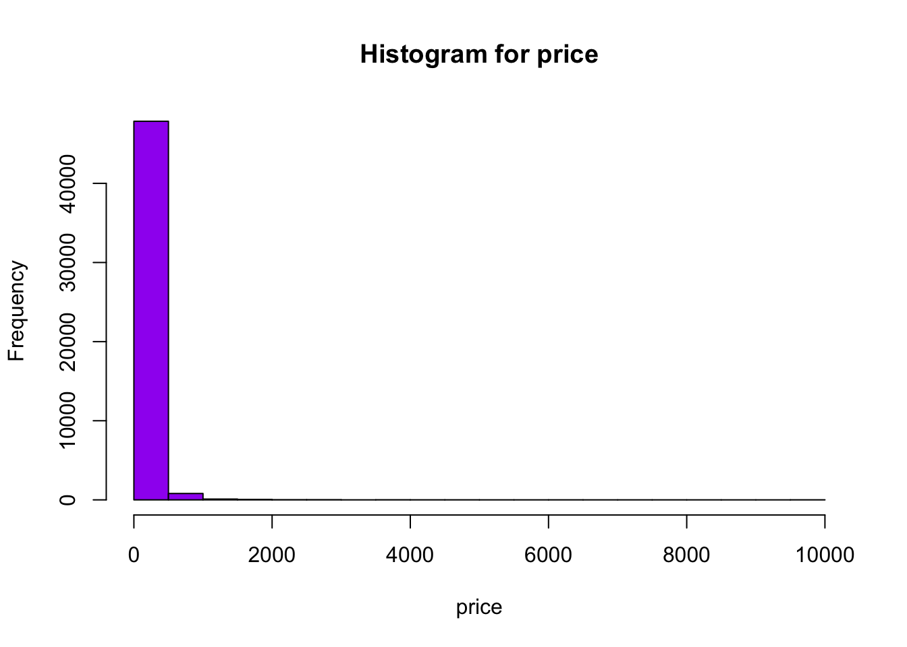
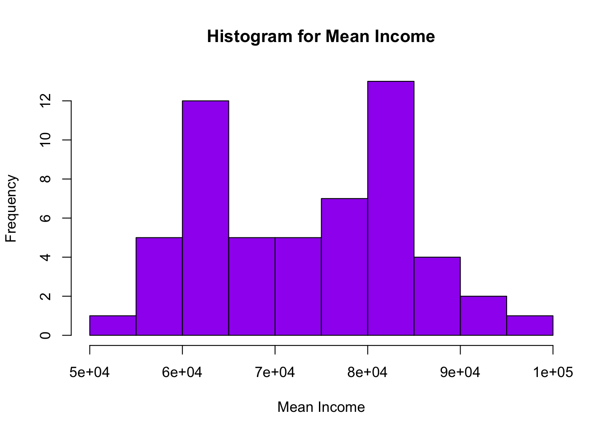

library(tidyverse)
library(ggplot2)
library(here)
library(readxl)
knitr::opts_chunk$set(echo = TRUE, warning=FALSE, message=FALSE)Challenge 9
challenge_9
Creating a function
Challenge Overview
Today’s challenge is simple. Create a function, and use it to perform a data analysis / cleaning / visualization task:
Examples of such functions are: 1) A function that reads in and cleans a dataset.
2) A function that computes summary statistics (e.g., computes the z score for a variable).
3) A function that plots a histogram.
That’s it!
Functions
Below are few functions for reading the data, getting the summary of the data, getting the stats of the data and plotting the histogram for the data
#function for reading data
read_data <- function(file_name, file_type, n_max = 1000, skip = 0) {
if (file_type == "excel"){
read_excel(here("posts","_data",file_name), skip = skip, n_max = n_max)
}
else if (file_type == "csv"){
read_csv(here("posts","_data",file_name))
}
}
#function for getting the summary of the entire dataset
get_summary <- function(dataset){
s <- summary(dataset)
print(s)
}
#function for getting the stats of a particular column
get_stats <- function(col) {
if (class(col) == "numeric"){
print(paste("Max: ",max(col, na.rm = TRUE)))
print(paste("Min: ", min(col, na.rm = TRUE)))
print(paste("Mean: ", mean(col, na.rm = TRUE)))
print(paste("Median: ", median(col, na.rm = TRUE)))
print(paste("sum: ", sum(col, na.rm = TRUE)))
}
else if (class(col) == "character") {
table(col)
}
}
#function for plotting histogram
get_hist <- function(cols,colname) {
title <- str_c("Histogram for ",colname)
hist(cols, col = "purple", main = title, xlab = colname)
}Analysis for Airbnb in New York City dataset:
“AB_NYC_2019.csv” dataset consists of a list of airbnb’s in 5 boroughs in New York City. There are 48895 rows and 16 columns. Each column represents specific data about the airbnb like location, owner, rating, etc.
Calling the above defined functions for further analysis
#calling the function read_data (csv file)
data <- read_data("AB_NYC_2019.csv","csv")
data #printing the data# A tibble: 48,895 × 16
id name host_id host_…¹ neigh…² neigh…³ latit…⁴ longi…⁵ room_…⁶ price
<dbl> <chr> <dbl> <chr> <chr> <chr> <dbl> <dbl> <chr> <dbl>
1 2539 Clean & … 2787 John Brookl… Kensin… 40.6 -74.0 Privat… 149
2 2595 Skylit M… 2845 Jennif… Manhat… Midtown 40.8 -74.0 Entire… 225
3 3647 THE VILL… 4632 Elisab… Manhat… Harlem 40.8 -73.9 Privat… 150
4 3831 Cozy Ent… 4869 LisaRo… Brookl… Clinto… 40.7 -74.0 Entire… 89
5 5022 Entire A… 7192 Laura Manhat… East H… 40.8 -73.9 Entire… 80
6 5099 Large Co… 7322 Chris Manhat… Murray… 40.7 -74.0 Entire… 200
7 5121 BlissArt… 7356 Garon Brookl… Bedfor… 40.7 -74.0 Privat… 60
8 5178 Large Fu… 8967 Shunic… Manhat… Hell's… 40.8 -74.0 Privat… 79
9 5203 Cozy Cle… 7490 MaryEl… Manhat… Upper … 40.8 -74.0 Privat… 79
10 5238 Cute & C… 7549 Ben Manhat… Chinat… 40.7 -74.0 Entire… 150
# … with 48,885 more rows, 6 more variables: minimum_nights <dbl>,
# number_of_reviews <dbl>, last_review <date>, reviews_per_month <dbl>,
# calculated_host_listings_count <dbl>, availability_365 <dbl>, and
# abbreviated variable names ¹host_name, ²neighbourhood_group,
# ³neighbourhood, ⁴latitude, ⁵longitude, ⁶room_type#calling the function get_stats
get_stats(data$price) #getting stats for price column[1] "Max: 10000"
[1] "Min: 0"
[1] "Mean: 152.720687186829"
[1] "Median: 106"
[1] "sum: 7467278"get_stats(data$neighbourhood_group) #getting stats for neighbourhood_group columncol
Bronx Brooklyn Manhattan Queens Staten Island
1091 20104 21661 5666 373 #calling the function get_summary
get_summary(data) #getting summary of entire dataset id name host_id host_name
Min. : 2539 Length:48895 Min. : 2438 Length:48895
1st Qu.: 9471945 Class :character 1st Qu.: 7822033 Class :character
Median :19677284 Mode :character Median : 30793816 Mode :character
Mean :19017143 Mean : 67620011
3rd Qu.:29152178 3rd Qu.:107434423
Max. :36487245 Max. :274321313
neighbourhood_group neighbourhood latitude longitude
Length:48895 Length:48895 Min. :40.50 Min. :-74.24
Class :character Class :character 1st Qu.:40.69 1st Qu.:-73.98
Mode :character Mode :character Median :40.72 Median :-73.96
Mean :40.73 Mean :-73.95
3rd Qu.:40.76 3rd Qu.:-73.94
Max. :40.91 Max. :-73.71
room_type price minimum_nights number_of_reviews
Length:48895 Min. : 0.0 Min. : 1.00 Min. : 0.00
Class :character 1st Qu.: 69.0 1st Qu.: 1.00 1st Qu.: 1.00
Mode :character Median : 106.0 Median : 3.00 Median : 5.00
Mean : 152.7 Mean : 7.03 Mean : 23.27
3rd Qu.: 175.0 3rd Qu.: 5.00 3rd Qu.: 24.00
Max. :10000.0 Max. :1250.00 Max. :629.00
last_review reviews_per_month calculated_host_listings_count
Min. :2011-03-28 Min. : 0.010 Min. : 1.000
1st Qu.:2018-07-08 1st Qu.: 0.190 1st Qu.: 1.000
Median :2019-05-19 Median : 0.720 Median : 1.000
Mean :2018-10-04 Mean : 1.373 Mean : 7.144
3rd Qu.:2019-06-23 3rd Qu.: 2.020 3rd Qu.: 2.000
Max. :2019-07-08 Max. :58.500 Max. :327.000
NA's :10052 NA's :10052
availability_365
Min. : 0.0
1st Qu.: 0.0
Median : 45.0
Mean :112.8
3rd Qu.:227.0
Max. :365.0
#calling the function get_hist
get_hist(data$price,"price") #plotting histogram for price column
Analysis for USA households dataset
This dataset describes the income statistics of various races over the years. The data shows what percentage of people fall under each income category i.e ranging from under $15,000 to $200,000 per year. The mean and median of the income is also calculated in the columns 13 and 15. The statistics are calculated all races combine and also separate for different races.
For this analysis considering only “All Race” data. Calling various function to get the analysis
#calling the function read_data
db <- read_data("USA Households by Total Money Income, Race, and Hispanic Origin of Householder 1967 to 2019.xlsx","excel", 55, 5)
db #to print the data# A tibble: 55 × 16
ALL RACE…¹ ...2 ...3 ...4 ...5 ...6 ...7 ...8 ...9 ...10 ...11 ...12
<chr> <dbl> <dbl> <dbl> <dbl> <dbl> <dbl> <dbl> <dbl> <dbl> <dbl> <dbl>
1 2019 128451 100 9.1 8 8.3 11.7 16.5 12.3 15.5 8.3 10.3
2 2018 128579 100 10.1 8.8 8.7 12 17 12.5 15 7.2 8.8
3 2017 2 127669 100 10 9.1 9.2 12 16.4 12.4 14.7 7.3 8.9
4 2017 127586 100 10.1 9.1 9.2 11.9 16.3 12.6 14.8 7.5 8.5
5 2016 126224 100 10.4 9 9.2 12.3 16.7 12.2 15 7.2 8
6 2015 125819 100 10.6 10 9.6 12.1 16.1 12.4 14.9 7.1 7.2
7 2014 124587 100 11.4 10.5 9.6 12.6 16.4 12.1 14 6.6 6.8
8 2013 3 123931 100 11.4 10.3 9.5 12.5 16.8 12 13.9 6.7 6.9
9 2013 4 122952 100 11.3 10.4 9.7 13.1 17 12.5 13.6 6.3 6
10 2012 122459 100 11.4 10.6 10.1 12.5 17.4 12 13.9 6.3 5.9
# … with 45 more rows, 4 more variables: ...13 <dbl>, ...14 <dbl>, ...15 <dbl>,
# ...16 <dbl>, and abbreviated variable name ¹`ALL RACES`#calling the function get_stats
get_stats(db$...4) #getting stats for income under $15,000[1] "Max: 14.8"
[1] "Min: 9"
[1] "Mean: 11.2727272727273"
[1] "Median: 11.4"
[1] "sum: 620"get_stats(db$...15) #getting stats for mean of total income for the year[1] "Max: 98088"
[1] "Min: 53616"
[1] "Mean: 73749.0727272727"
[1] "Median: 73816"
[1] "sum: 4056199"#calling the function get_summary
get_summary(db) ALL RACES ...2 ...3 ...4
Length:55 Min. : 60813 Min. :100 Min. : 9.00
Class :character 1st Qu.: 82948 1st Qu.:100 1st Qu.:10.30
Mode :character Median : 98990 Median :100 Median :11.40
Mean : 98488 Mean :100 Mean :11.27
3rd Qu.:116982 3rd Qu.:100 3rd Qu.:12.00
Max. :128579 Max. :100 Max. :14.80
...5 ...6 ...7 ...8
Min. : 8.00 Min. : 8.300 Min. :11.70 Min. :16.10
1st Qu.: 9.80 1st Qu.: 9.400 1st Qu.:12.90 1st Qu.:17.40
Median :10.20 Median : 9.700 Median :13.40 Median :18.40
Mean :10.15 Mean : 9.784 Mean :13.65 Mean :19.14
3rd Qu.:10.60 3rd Qu.:10.100 3rd Qu.:14.35 3rd Qu.:20.70
Max. :11.40 Max. :11.000 Max. :16.80 Max. :24.80
...9 ...10 ...11 ...12
Min. :11.90 Min. : 7.70 Min. :1.700 Min. : 1.100
1st Qu.:12.55 1st Qu.:11.95 1st Qu.:3.250 1st Qu.: 2.050
Median :13.30 Median :13.90 Median :5.100 Median : 4.200
Mean :13.30 Mean :13.32 Mean :4.969 Mean : 4.409
3rd Qu.:13.90 3rd Qu.:14.85 3rd Qu.:6.300 3rd Qu.: 6.200
Max. :15.10 Max. :15.60 Max. :8.300 Max. :10.300
...13 ...14 ...15 ...16
Min. :47938 Min. : 268.0 Min. :53616 Min. : 287.0
1st Qu.:52911 1st Qu.: 334.5 1st Qu.:62547 1st Qu.: 380.5
Median :56945 Median : 431.0 Median :73816 Median : 495.0
Mean :56879 Mean : 453.4 Mean :73749 Mean : 550.9
3rd Qu.:60398 3rd Qu.: 480.0 3rd Qu.:82374 3rd Qu.: 701.5
Max. :68703 Max. :1183.0 Max. :98088 Max. :1201.0 #calling the function get_hist
get_hist(db$...15,"Mean Income")